Subject
Technology
 Is the internet feeding on its own tail?
Is the internet feeding on its own tail? Is precision agriculture making our food more vulnerable?
Is precision agriculture making our food more vulnerable? Is your software actually getting faster?
Is your software actually getting faster?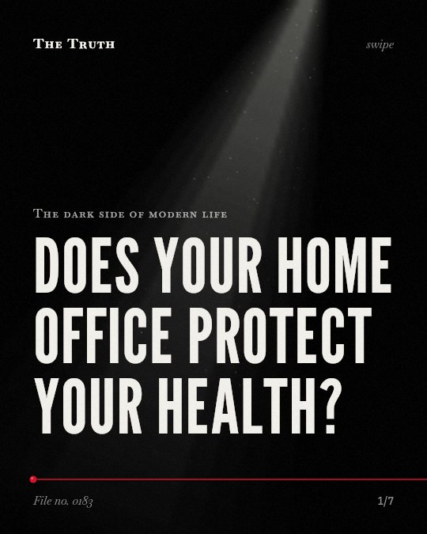
Does your home office protect your health?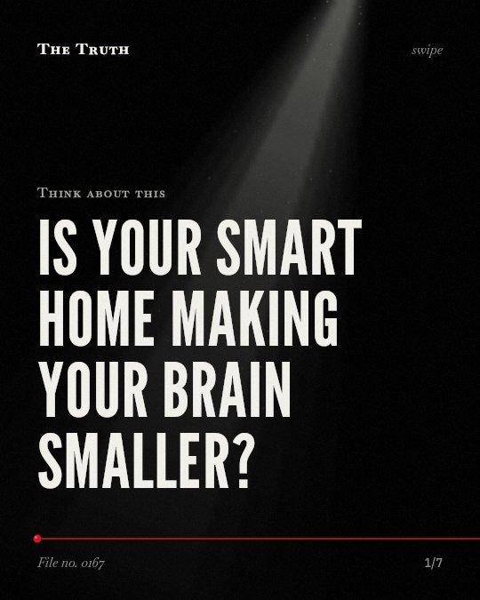
Is your smart home making your brain smaller? Is your personality being rewritten by an algorithm?
Is your personality being rewritten by an algorithm? Who is actually deciding if you are qualified?
Who is actually deciding if you are qualified? Does your phone make you blind to your surroundings?
Does your phone make you blind to your surroundings? Does capturing a moment erase it?
Does capturing a moment erase it? Who is more persuasive: you or a machine?
Who is more persuasive: you or a machine?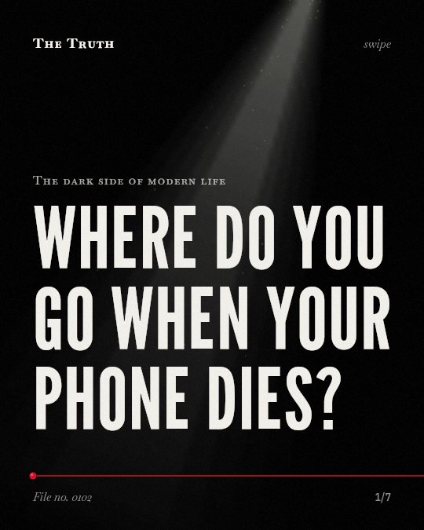
Where do you go when your phone dies?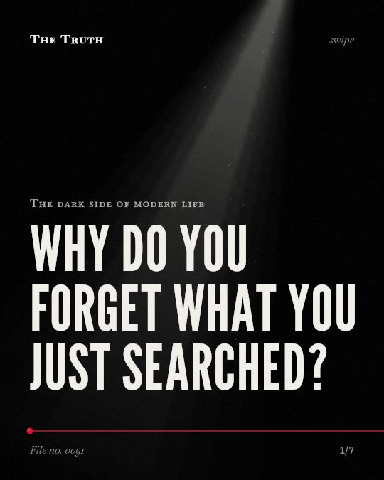
Why do you forget what you just searched?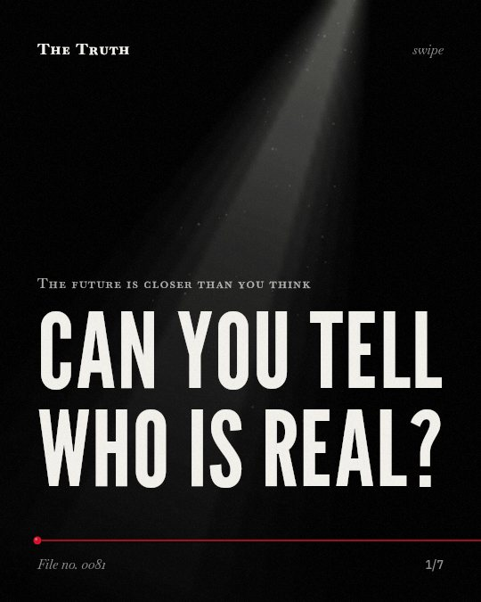
Can you tell who is real?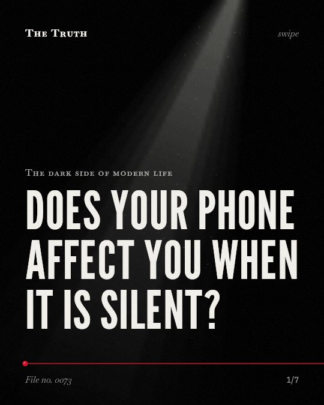
Does your phone affect you when it is silent?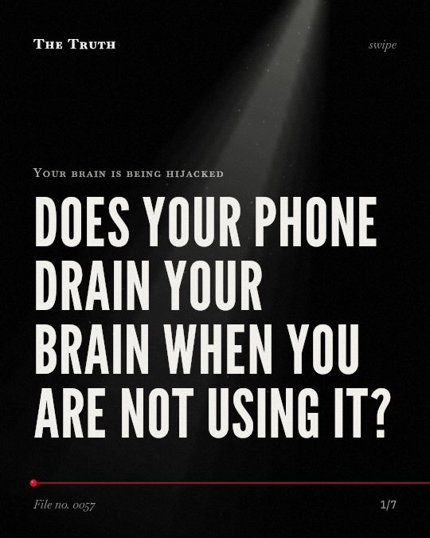
Does your phone drain your brain when you are not using it?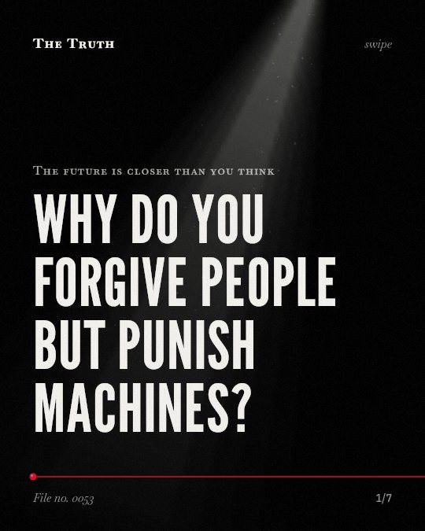
Why do you forgive people but punish machines?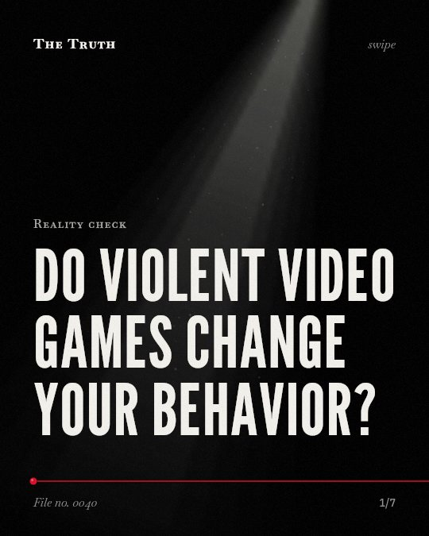
Do violent video games change your behavior?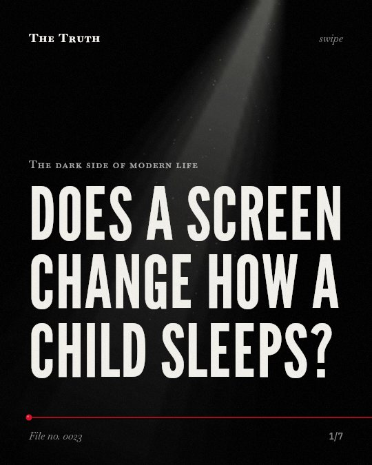
Does a screen change how a child sleeps?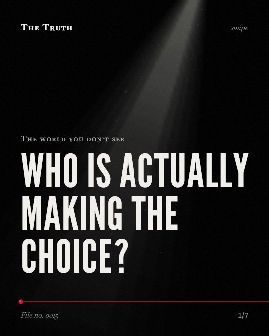
Who is actually making the choice?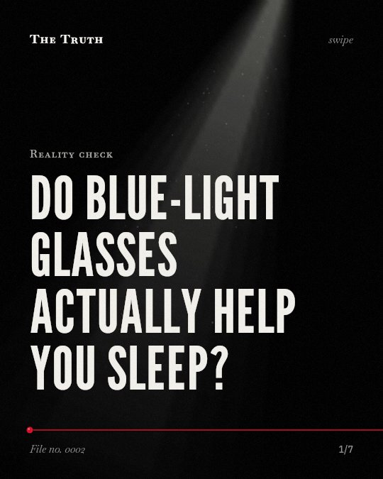
Do blue-light glasses actually help you sleep?